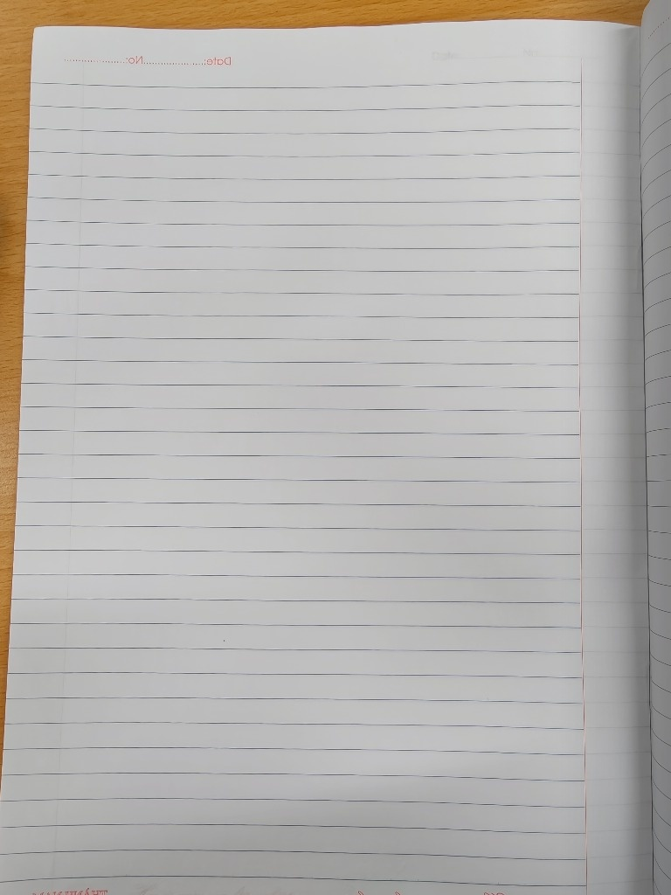
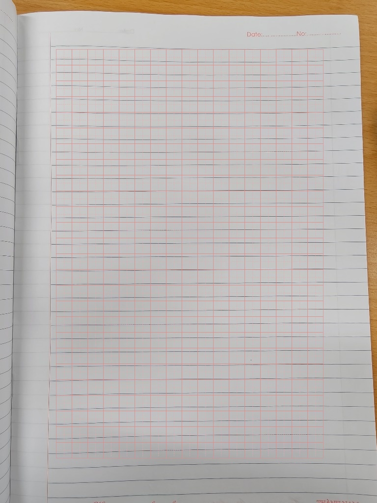
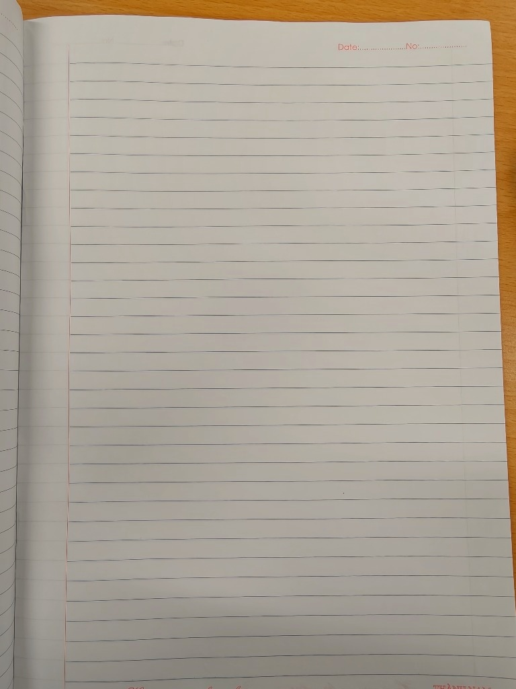

Nội dung bài viết (Phồn thể)
0 chữ / 0 dòng
✨ CƠ CHẾ TỰ NHIÊN HÓA ("KHÔNG CHỮ NÀO GIỐNG CHỮ NÀO"):
Chèn Sơ Đồ / Hình Vẽ / Bảng Kẻ Tay
Tắt
Tải ảnh bài tập / Tài liệu cần chép
Kéo thả ảnh vào đây hoặc bấm để chọn ảnh
Hỗ trợ JPG, PNG, WEBP (Hoặc nhấn Ctrl+V để dán ảnh)
Đang khởi tạo mô hình nhận diện...
Kết quả đọc chữ từ ảnh
繁體中文 OCR
Mẫu Trang Vở Thực Tế
 📔 Kẻ Ngang Thành Nam (Trang Phải)
📔 Kẻ Ngang Thành Nam (Trang Phải)

📖 Kẻ Ngang Thành Nam (Trang Trái)
🏮 Vở Điền Tự Cách (田字格)
🕯️ Kẻ Ngang Đèn Bàn Ấm 📐 Vở 4 Ô Ly Học Sinh
📐 Vở 4 Ô Ly Học Sinh
📤
Tải Ảnh Vở Khác Của Bạn
Phông chữ viết tay chủ đạo
Mực viết
Gel đen tự nhiên
Bút bi xanh
Đen mực đậm
Độ ngoáy & run tay ngẫu nhiên
55%
Độ xô lệch khoảng cách chữ
50%
Mô phỏng chữ dồn cụm khi viết nhanh và khoảng hở ngắt câu không đều
Khoảng cách dòng kẻ
Liền dòng
📄
Viết liền dòng (32 dòng)
📖
Viết cách dòng (16 dòng)
Bỏ trống 1 dòng kẻ giữa các hàng chữ, tạo độ thoáng và không gian ghi chú
Cỡ chữ
22px
Vị trí đặt chữ trên dòng kẻ
-3px
Lề trái (Vạch chỉ đỏ)
114px